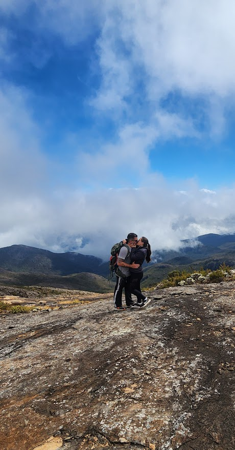

Minhas Trilhas
Aqui estão algumas das trilhas que fiz ao longo dos anos, com fotos e informações detalhadas de cada uma.
Rampa de Voo Livre de Porciuncula
A rampa de voo livre de Porciuncula é muitro procurada por seu lindo visual, além de ser um ótimo local para camping.
Localização: Porciuncula, RJ Modalidade: Camping Nível Difilcudade: FácilTrilha do Pico da Bandeira por Minas Gerais
Uma trilha desafiadora em Alto Caparaó, com vistas panorâmicas incríveis ao final do percurso.
Localização: Alto Caparaó, MG Modalidade: Trilha Dificuldade:MédiaTrilha do Pirineu
Uma trilha iniciante porém com vistas incriveis ao final do percurso.
Localização: Porciuncula, RJ Modalidade:Trilha Dificuldade:FácilTrilha do Pico da Bandeira pelo Espirito Santo
Uma trilha desafiadora em Pedra Menina, com vistas panorâmicas incríveis ao final do percurso.
Localização: Pedra Menina, ES Modalidade: Trilha Dificuldade:Média